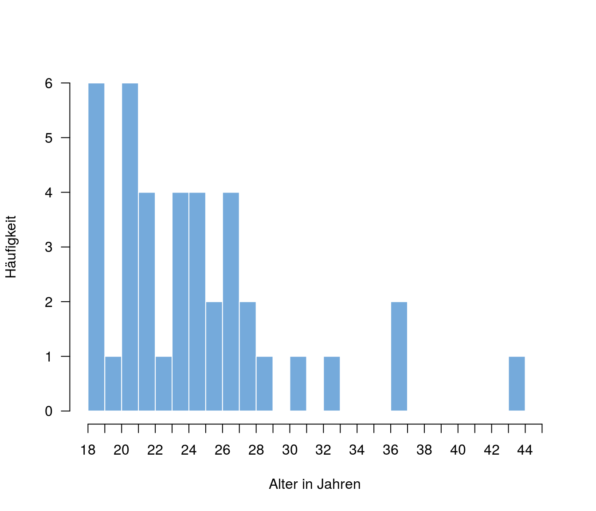
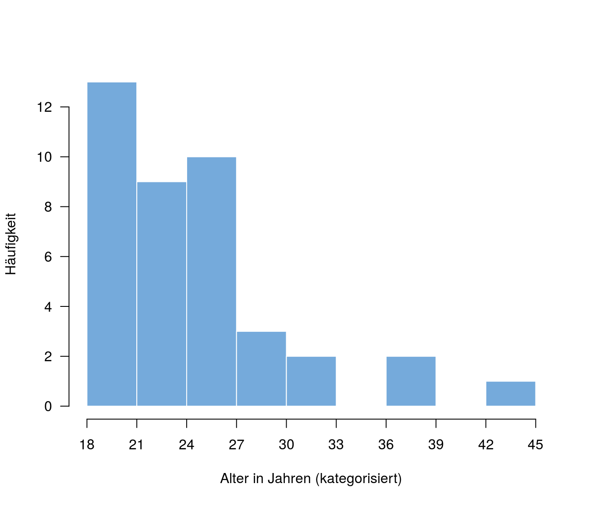

Lösungen
Kapitel 1: Messen
Überlegt in 2er- oder 3er-Gruppen, welches Skalenniveau die folgenden Variablen aufweisen:
- Das bei uns geläufige metrische System zur Messung von Distanzen in Millimetern, Zentimetern, Metern, oder Kilometern;
- die Nummern der Straßenbahnen der KVB (Kölner Verkehrsbetriebe);
- Schulnoten;
- Postleitzahlen.
Das metrische System weist Verhältnisskalenniveau auf: Die Relation Gleichheit/Verschiedenheit ist erhalten, denn \(1~m\) ist etwas anderes als \(2~m\), aber \(1~m\) ist immer das gleiche. Die Relation Ordnung ist erhalten, denn \(1~m\) ist kürzer als \(2~m\) ist kürzer als \(3~m\). Die Relation Größe der Verschiedenheit ist erhalten, denn der Unterschied zwischen \(1~m\) und \(2~m\) ist genauso groß wie der Unterschied zwischen \(2~m\) und \(3~m\). Die Relation Verhältnis der Merkmalsausprägung ist erhalten, \(2~m\) sind doppelt so lang wie \(1~m\) und \(4~m\) sind doppelt so lang wie \(2~m\). Die Relation absoluter Werte ist nicht gegeben, denn die Länge eines Meters ist willkürlich gewählt, man hätte genauso gut eine kürzere oder längere Länge festlegen können. (Übrigens: Ein Meter entspricht genau der Strecke, die Licht in \(\frac{1}{299{,}792{,}458} s\) im Vakuum zurücklegt.) Da alle Relationen außer der Relation absoluter Werte gegeben sind, ist Verhältnisskalenniveau gegeben.
Die Nummern der Straßenbahnen der KVB weisen bestenfalls Nominalskalenniveau auf: Es ist vermutlich so gedacht, dass die Nummer die gefahrene Strecke anzeigen soll, das ist auch häufig der Fall. Unterschiedlich Nummern bezeichnen unterschiedliche Strecken, gleiche Nummern bezeichnen oft, aber nicht immer die gleiche Strecke: Gelegentlich fährt eine Linie 1 z.B. nicht zur Endhaltestelle Bensberg, sondern zur Endhaltestelle Zündorf. Man kann also nicht davon ausgehen, dass zwei Straßenbahnen mit der gleichen Nummer auch die gleiche Strecke fahren.
Über Schulnoten lässt sich immer wieder gut streiten. Ist die Benotung fair, ist die Relation von Gleichheit/Verschiedenheit erhalten, denn zwei unterschiedliche Schulleistungen sollten sich auch in unterschiedlichen Noten niederschlagen. Ungefähr gleiche Leistungen werden auch gleich benotet. Die Relation der Ordnung ist ebenfalls erhalten, denn eine 1 ist besser als eine 2 ist besser als eine 3. Die Relation der Größe der Verschiedenheit ist aber vermutlich meist selbst bei den besten und bemühtesten Lehrern nicht gegeben: Oft ist es der Leistungsunterschied zwischen einer 1 und einer 2 eben doch nicht genauso groß wie der Unterschied zwischen einer 2 und einer 3. Deshalb kann man sagen, dass Schulnoten Ordninalskalenniveau aufweisen. (Wir werden später sehen, warum es dann auch eigentlich nicht geschickt ist, eine “Durchschnittsnote” zu berechnen.)
Postleitzahlen weisen Nominalskalenniveau auf: Nur die Relation von Gleichheit/Verschiedenheit ist erhalten: Unterschiedliche Zahlen bedeuten unterschiedliche Postleitzahlenbereiche (z.B. Stadtteile), gleiche Postleitzahlen bedeuten, dass es auch der gleiche Postleitzahlenbereicht ist. Die Relation der Ordnung ist schon nicht mehr wirklich gegeben: Zwar kann man eine grobe Ordnung nach Regionen feststellen, diese ist aber sehr unsystematisch.
Kapitel 2: Beschreiben und Zusammenfassen
- Zeichnet ein Histogramm der Variable Alter in der folgenden Tabelle.

- Zeichnet ein Histogramm der Variable Alter aus der vorigen Aufgabe. Zeichnet dieses Mal jedoch eine sekundäre Häufigkeitsverteilung, beginnend mit der Kategorie “18-21 Jahre”.

- Berechnet den Modus der Variable Geschlecht aus Aufgabe 1.
\(\textit{Mo}=\) “weiblich”
- Berechnet den Mittelwert der Variable Alter aus Aufgabe 1.
\(M =24.85\)
- Erläutert, warum es nicht sinnvoll ist, den Median der Variable Geschlecht zu berechnen.
Es ist nicht sinnvoll, den Median von Geschlecht zu berechnen, da sich die Merkmalsausprägungen (weiblich vs. männlich) in keine sinnvolle Ordnung bringen lassen. Entsprechend weist die Variable Geschlecht nur Nominalskalenniveau auf.